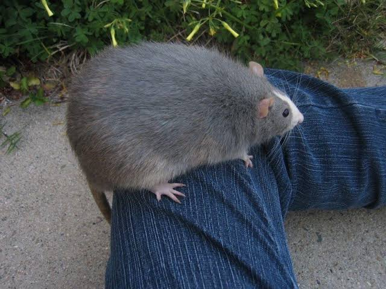
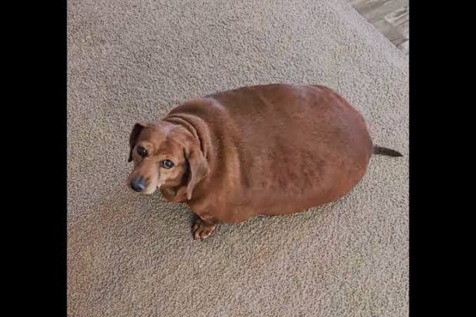
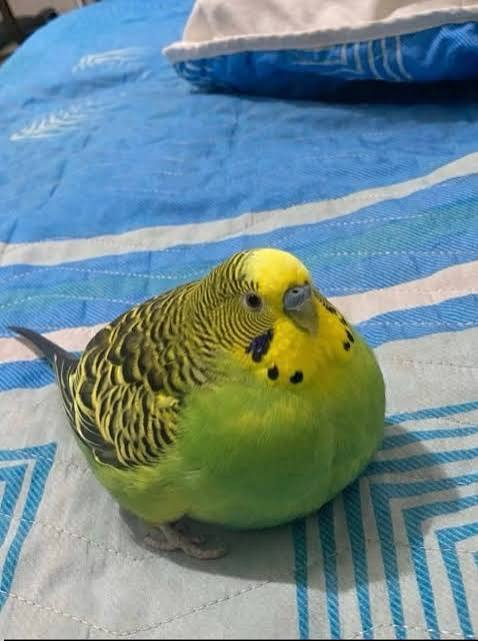

Po
Macho, 2 anos. Brincalhão e muito dócil.
Conheça os amiguinhos que estão procurando um lar repleto de carinho!
Macho, 2 anos. Brincalhão e muito dócil.

Fêmea, 1 ano. Calma, carinhosa e adora carinho.

Macho, 3 anos. Adora passear e convive bem com crianças.

Fêmea, 6 meses. Muito esperta e adora brincar com bolinhas.